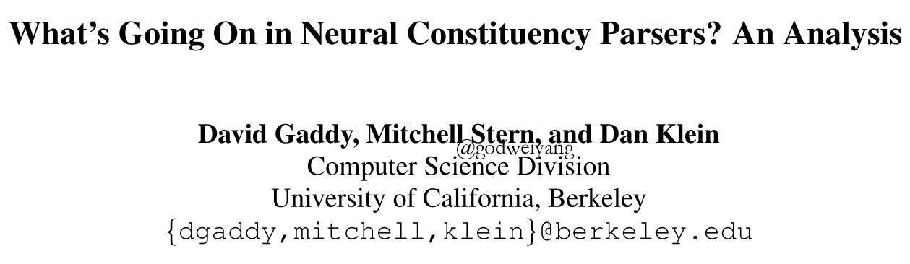
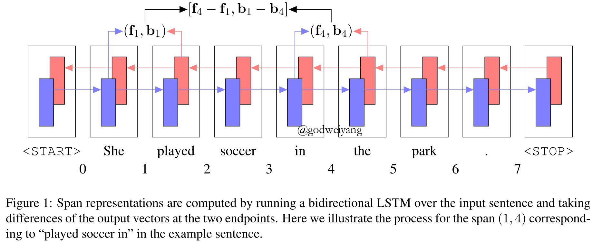

论文地址：What’s Going On in Neural Constituency Parsers? An Analysis
代码地址：github

摘要
最近几年，成分句法分析的方法发生了巨大的变化。传统的有基于PCFG的CKY算法，最近几年随着神经网络的兴起又产生了基于转移的方法、CRF句法分析、重排序方法等等。
本文是伯克利大学在NAACL18提出的一种基于神经网络的句法分析方法，和传统的方法不同的是，完全不使用语法规则和词汇特征，只需要用神经网络学习出短语的表示即可。通过实验可以发现，神经网络的确也很好的隐式学习出了传统的方法显式用到的语法规则和其他一些特征。在PTB数据集上，该方法达到了92.08%的F1值，这也直接超过了传统的大多数方法。而在下一篇伯克利的ACL18论文中，他们提出的基于Multi-Head Attention的成分句法分析方法更是达到了95.13%的F1值。
介绍
在过去几年，成分句法分析方法发生了巨大的变化。最大的变化就是语法规则和人工的词汇特征变得越来越不那么重要，取而代之的用循环神经网络学习短语的表示，但是还没有什么人对这种神经网络表示的有效性做研究分析。本文提出了一种用RNN学习表示用来句法分析的模型，并对模型的各个方面进行了分析。
句法分析模型
模型总览
和传统的CKY算法一样，该模型还是采用动态规划的算法求解每个短语的最大得分对应的类别以及分割点。只不过这里的短语得分不再是产生式概率之积，而是用RNN训练出来的短语得分。
用$s(i,j,l)$表示短语$x_{ij}$类别为$l$的得分，句法树$T$的得分表示为所有产生式的得分总和：
\[s(T) = \sum\limits_{(i,j,l) \in T} {s(i,j,l)} \]
值得一提的是，该句法分析模型不需要句法树是二叉树，所以可以直接分析出$n$叉树结构。
模型的任务依然是寻找得分最高的句法分析树：
\[\hat T = \mathop {\arg \max }\limits_T s(T)\]
短语得分$s(i,j,l)$的计算可以通过三个部分实现：单词表示、短语表示、短语类别得分。
单词表示
首先采用Char-BiLSTM训练出每个单词的字符级别的表示，这种表示方法已经很常见了，优点是可以捕捉到单词的前缀后缀等信息，还可以解决未登录词的表示问题。
最后将字符级别的词表示和预训练的词向量拼接起来作为最终的单词表示。也可以用外部序列标注器预测出单词的词性，并拼接上去作为输入，但是在这里只要Char-BiLSTM训练的足够好，就不需要词性标注了。
短语表示
对句子单词序列跑一遍双向LSTM，得到每个单词的前向后向上下文表示${ {\bf{f}}_i}$和${ {\bf{b}}_i}$，然后对于短语$x_{ij}$，用两者的上下文表示的差值拼接起来作为该短语的向量表示：
\[{ {\bf{r}}_{ij}} = [{ {\bf{f}}_j} - { {\bf{f}}_i},{ {\bf{b}}_i} - { {\bf{b}}_j}]\]
图1是一个具体的例子：

短语类别得分
最后将短语表示输入到一个单层前馈神经网络中，输出得分向量，其中得分向量每个维度就对应了每个类别的概率。具体计算公式如下：
\[s(i,j,l) = {[{ {\bf{W}}_2}ReLU({ {\bf{W}}_1}{ {\bf{r}}_{ij}} + { {\bf{z}}_1}) + { {\bf{z}}_2}]_l}\]
句法分析
虽然现在是$n$叉树，但是依然可以用CKY算法来进行句法分析。这时候就需要定义一个虚拟短语类别$\emptyset$，表示实际上不能构成短语的临时短语。例如对于产生式$A \to BCD$，分析的时候可以将其分析为$A \to \emptyset D,\emptyset \to BC$。定义虚拟短语类别的得分为0，即$s(i,j,\emptyset ) = 0$。
定义${s_{best}}(i,j)$为短语$x_{ij}$得分最高的句法分析树的得分。首先对长度为1的短语即单词进行初始化：
\[{s_{best}}(i,i + 1) = \mathop {\max }\limits_l s(i,i + 1,l)\]
然后对于短语$x_{ij}$，运用动态规划算法计算得分最高的句法分析树：
\[{s_{best}}(i,j) = \mathop {\max }\limits_l s(i,j,l) + \mathop {\max }\limits_k [{s_{best}}(i,k) + {s_{best}}(k,j)]\]
注意到这里对类别的预测和分割点的预测是分开的，短语的最高分数就是最优子树的每个结点的类别得分之和。
自底向上进行计算，最终整个句子的最高得分就是${s_{best}}(0,n)$。然后自顶向下回溯得到整个句子的句法分析树，注意如果回溯遇到了虚拟短语类别$\emptyset$，就直接忽略它，继续往下回溯。
整个算法的时间复杂度为$O({n^3} + L{n^2})$，因为没有用到语法规则，所以$n^3$的常数系数$\left| G \right|$就没有了，复杂度大大降低！
模型训练
损失函数依然使用的是max-margin，即
\[\mathcal L = \max \left( {0,\mathop {\max }\limits_T [s(T) + \Delta (T,{T^*})] - s({T^*})} \right)\]
这里提到了一点加快计算的方法，${\Delta (T,{T^*})}$可以融入到动态规划算法中一起计算，即将短语类别得分$s(i,j,l)$替换为$s(i,j,l) + 1[l \ne l_{ij}^*]$，其中$l_{ij}^*$是标准树中短语$x_{ij}$的类别。
实验结果
经过10轮训练之后，模型在验证集上的F1值达到了92.22%，在测试集上的F1值为92.08%。